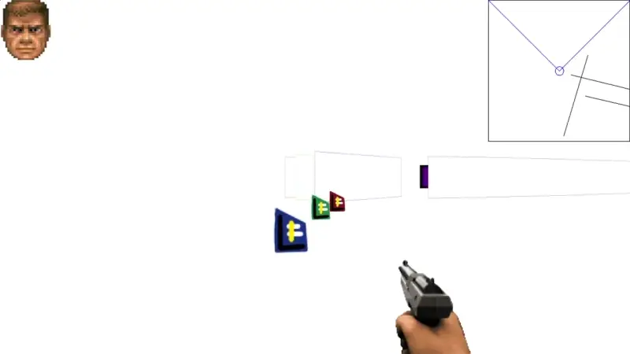

More like in C, actually. This one was done as the coursework back in 2nd semester, and we weren't allowed to use Object-Oriented Programming. Not that I knew how to use it anyway. The reasoning for this was to get us accustomed to basics of programming and to suffer through the lack of OOP so we'd understand why it's needed.
So basically this is pure C. Basic while(true) loop serves as a game cycle and there are 2 monster functions that do logic and graphics. This 3D is as fake as it gets, really it shoots a bunch of rays and checks for the first thing each one hits to determine "X" of a point on screen, then makes up "Y" based on some constants.
I also made a little level editor to accompany this game.
This project was made with a lot of passion. Back when I made it I was quite proud of my accomplishment. I remember wanting to continue development but the code is a hellscape really.
This project uses C with some syntax sugar from C++ and SDL2 library for creating a window and drawing lines and circles on screen.
There's a release available on github with compiled exes. I wish you luck if you'll actually try to run it though as I have no idea what is going on with its dependencies. It also has some memory leaks I think (sorry).
